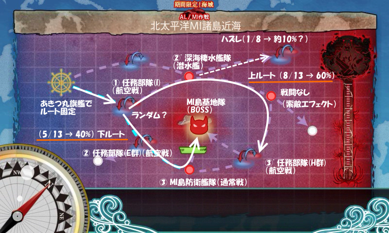
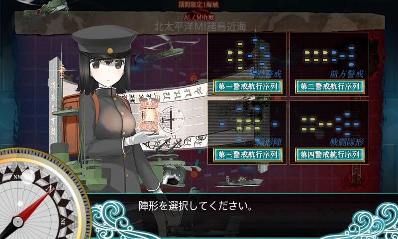
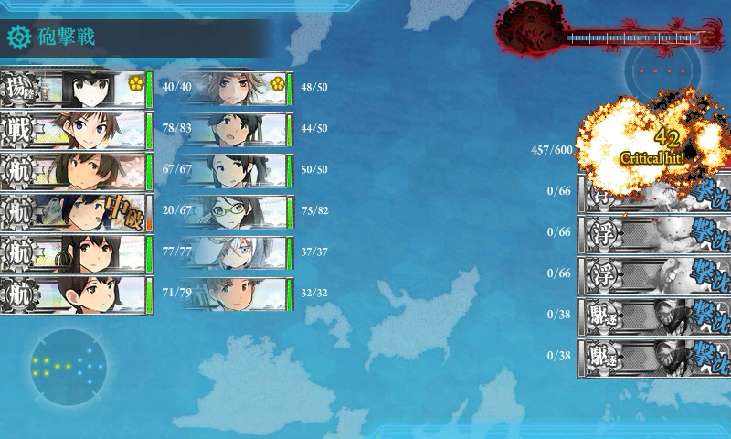
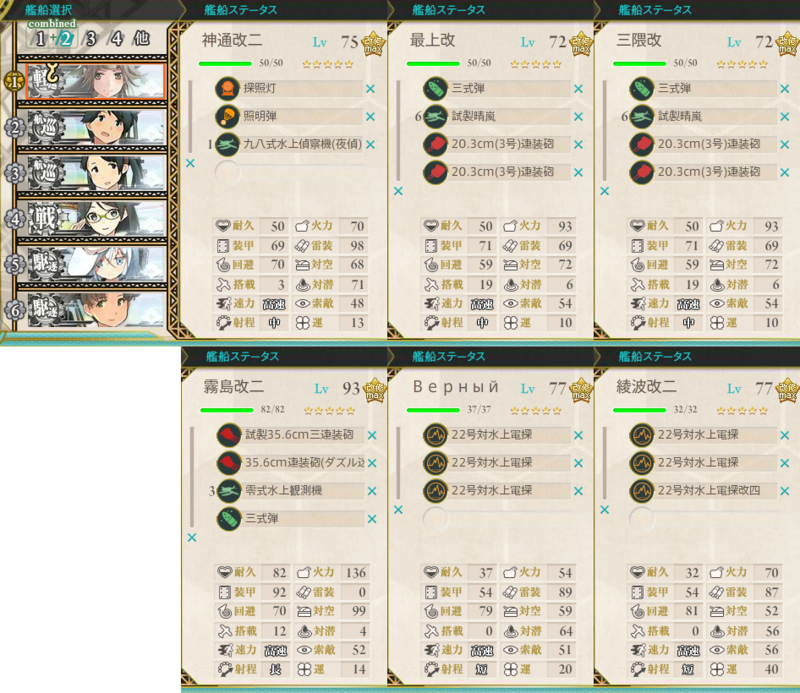
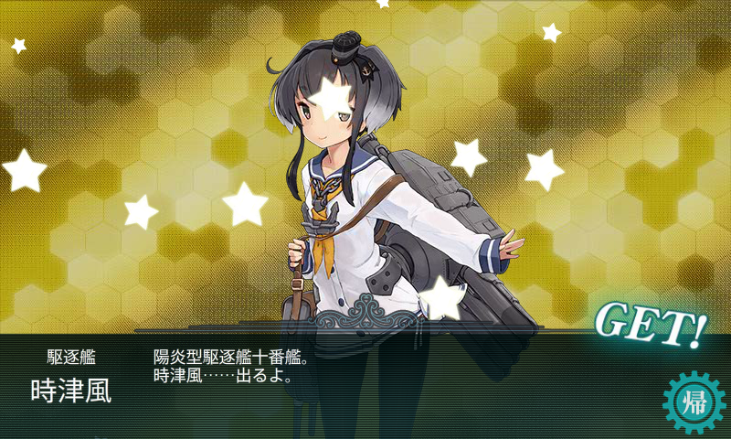

艦これ：E-4 北太平洋MI諸島近海
公開日：

10回撃破でクリア。13回出撃のうち、上ルートが8回（1回逸れて、1回大破撤退）、下ルートが5回（1回撤退）。BOSS に到達しさえすれば、かなり楽に撃破まで持ち込めた。わざわざキラ付け・支援艦隊などの対策をとる必要はないと思う。
あきつ丸を旗艦することにより最初のルートを固定できる。これにより下ルートをとる可能性を高めることができるが、正直上ルートでも下ルートでも中途撤退率はそれほど変わらないと思われる（自分の場合、25％：20％）。
ちなみに、あきつ丸旗艦の場合、上ルート:下ルート は 3:2 の割合。多少、潜水艦ルートをとることの方が多い印象を受けた。試行回数が少なすぎるので断言はできないけれど。

陣形
E-3 よりも敵のバリエーションが増えるので、陣形をちょっとだけ考えないといけない。
- 航空戦：第三警戒航行序列
- 対潜水艦：第一警戒航空序列
- 通常戦、BOSS 戦：第四警戒航行序列
でよい。E-3 ではよくわかってなくて BOSS 戦で“第三警戒航行序列（前方警戒）”を選んでいたけれど、これは通常の複縦陣に当たるようだ。“第四警戒航行序列（戦闘隊形）”を選んだ方が早く片付くので、こちらを選ぶべし（通常の単縦陣に相当？）。
装備

第一艦隊。
BOSS には「艦攻」しか効かないらしい（雷撃もダメ）。Twitter で「基地攻撃＝爆弾＝艦爆じゃないの？」って言ってる人がいたけど、艦攻も爆弾は落とせるし、むしろ艦攻のほうが大きな爆弾が積めるから、史実でも基地攻撃はたぶん艦攻でやったろうと思う（艦爆は小さなターゲットを精密に狙うのに使う。基地爆撃にも使うかもしれないが、艦船を狙うのが本領だろう）。
E-3 よりも艦戦を増やして制空をとれるようにしてるけど、厳密に計算はしていない。この編成でもボスで航空優勢は取れるようだ。

あとは索敵重視で。あきつ丸に「烈風」を積みまくれるのがちょっと面白いなと思った。昼の砲撃もやけに強い。

第二艦隊。
ダメージソースは「三式弾」を装備した重巡コンビと「霧島」。それ以外には砲撃力を期待していないので（それでも余裕で BOSS を倒せる）、駆逐艦は電波係に、「神通」は夜戦補助係にした（AL 作戦で「川内」を使わずにこっちで使いたかった！ キャラへの愛着的に）。それでも「神通」は割といいダメージをたたき出していたけれど。
ドロップ
| - | S | A |
| MI島防衛艦隊 | 金剛、三隈、初風、赤城、蒼龍、比叡、浜風、舞風、妙高、夕雲 | - |
| MI島基地隊 | 五月雨、鳥海 | - |
| 任務部隊(I) | - | 不知火 |
「三隈」は養殖しよう。
報酬

駆逐艦「時津風」。それとダメコン（女神）。
消費資材（遠征・任務によるぞ元を含む）
- 燃料：8000
- 弾薬：5000
- 鋼鉄：6000
- ボーキサイト：5000
高速修復財70個。まだ備蓄は大丈夫。所要時間は6時間弱。洗濯しながらのんびりやってた。